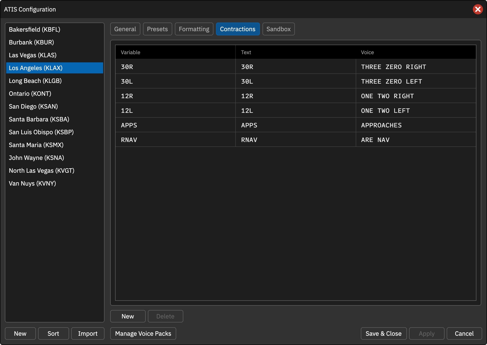
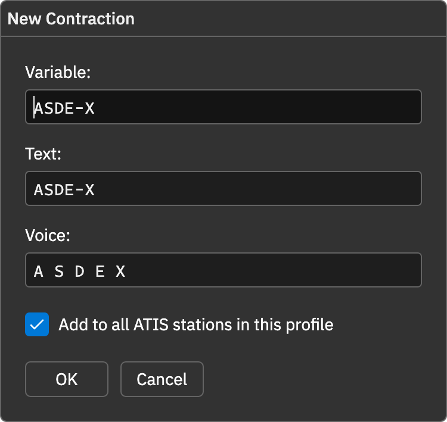

本页目录
自定义缩略语
Contractions 标签页维护缩写与完整词句的映射，可用于航空缩略语和修正发音。席位自定义项优先于服务提供的默认缩略语。
新建
点击 New 并填写：
- Variable：变量名，多词名称自动转换为空格改下划线等变量形式。
- Text：文字 ATIS 中显示的内容。
- Voice：语音引擎实际朗读的文本。
- Add to all ATIS stations in this profile：将该项加入当前配置的所有席位，否则只加到选中席位。
例如变量 RNAV 的文字保持 RNAV，语音设为 R NAV。
编辑与删除
双击表格文字进入编辑，Enter 提交。选中行后点击 Delete 删除，需要恢复时重新添加。
使用与预览
输入 @ 后接变量名会显示自动补全菜单。编辑器中的点状下划线标记实际读法与显示不同的内容，悬停查看语音替换结果。数字、跑道等语音标记也使用相同预览。
CAN 默认词表状态
当前默认词表由配置的语音列表地址旁的 contractions 接口加载。获取失败时，参考词表不等于本地已加载；需要保证输出时，可将本单位常用项目明确加入席位配置。
操作截图参考
以下为上游原版截图，保留英文标签。用于定位操作；品牌、登录字段与网络行为以本页 CAN 说明为准。

